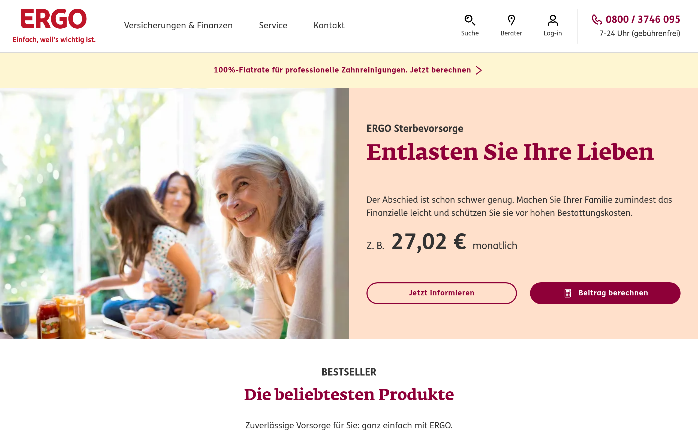
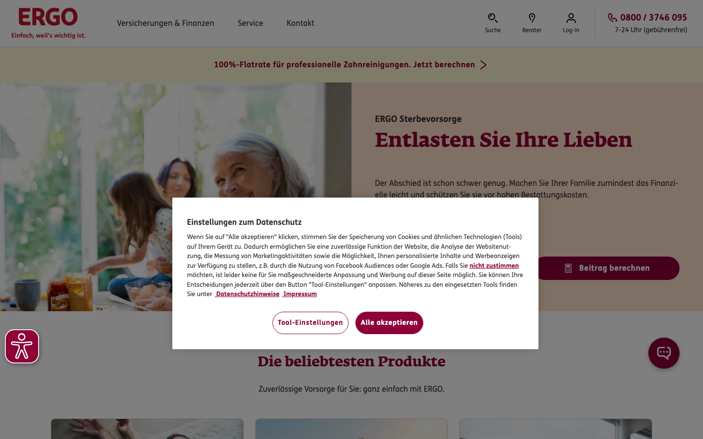
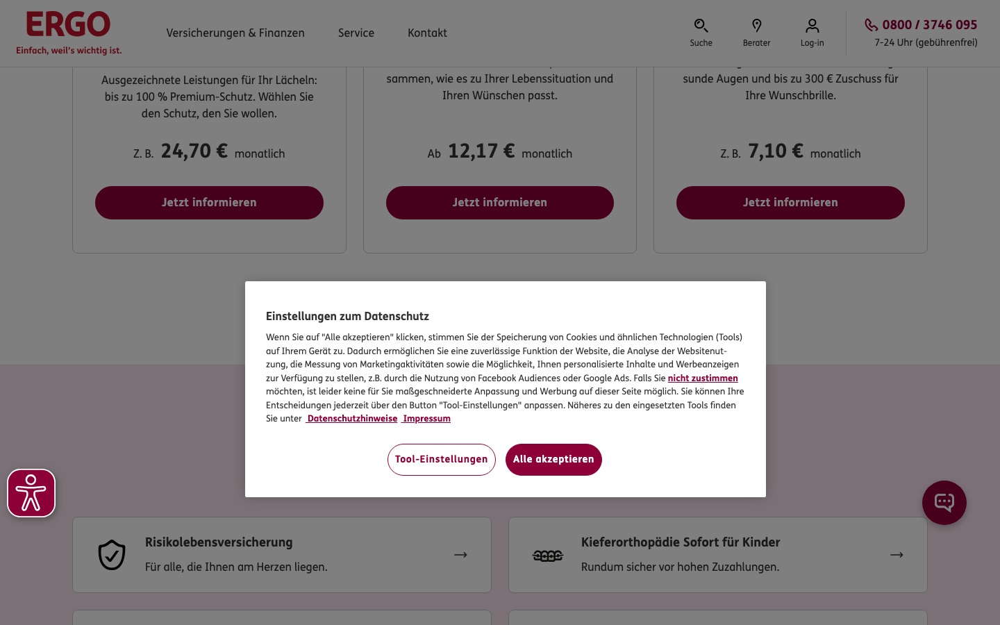
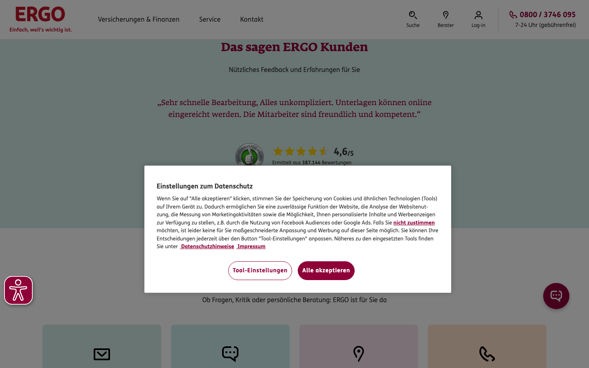
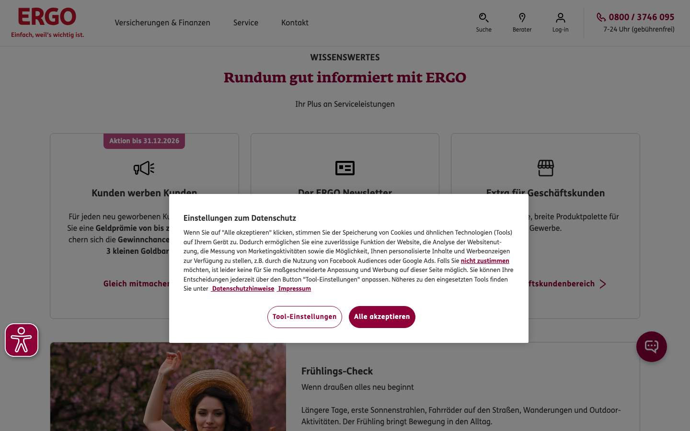
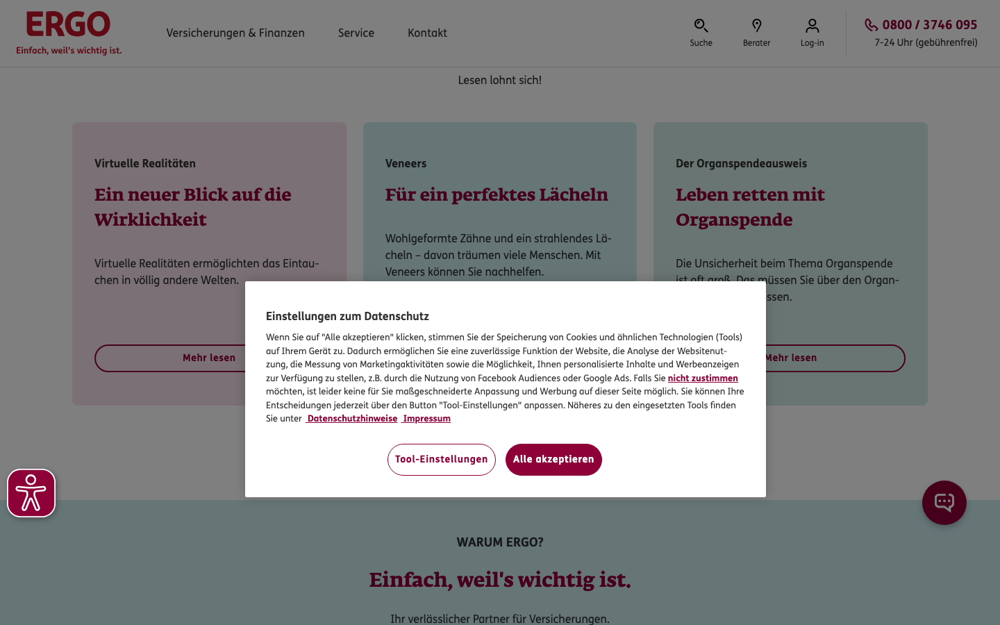
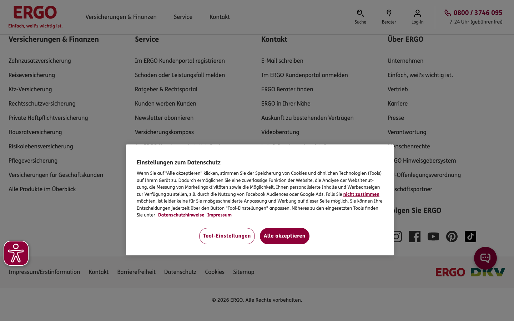

Intern
Design System
Alle Farben, Schriften und Komponenten von bfsg-check.eu — extrahiert aus dem ERGO Design System (ergo.de) via skillui + manuelle CSS-Analyse.
1. ergo.de — Screenshots (via skillui)
7 Scroll-Frames der ERGO Homepage, automatisch von skillui aufgenommen. Basis für die Designentscheidungen.

Vollständige Homepage (skillui)

Scroll 0% — Hero / Navigation

Scroll 17% — Produkt-Tiles
Scroll 33% — Service-Bereich

Scroll 50% — Mitte der Seite

Scroll 67% — Weiterer Inhalt

Scroll 83% — Footer-Bereich

Scroll 100% — Footer
2. Farbpalette
Direkt aus dem ERGO CSS extrahiert. Alle Werte sind CSS Custom Properties in style.css und design-system/tokens.css.
Primärfarben
Hintergründe & Oberflächen
Text & Rahmen
3. Typografie
BFSG Prüfung
Website prüfen lassen
Experten-Bericht in 24h
Standard-Fließtext. Serifenlose Schrift aus dem ERGO Design System.
Gedämpfter Hilfstext, Labels, Fußnoten.
| Schrift | Google Fonts | ERGO Original | Verwendung |
|---|---|---|---|
| Playfair Display | family=Playfair+Display:wght@400;700 |
Fedra Serif (proprietär) | Alle Überschriften (h1–h4) |
| Source Sans 3 | family=Source+Sans+3:wght@400;600;700 |
FS Me (proprietär) | Fließtext, Labels, Buttons |
4. Navigation
Direkt aus newNavigation.min.css extrahiert.
| Token | Wert | Quelle |
|---|---|---|
--header-height | 73px (mobile) / 97px (≥1152px) | newNavigation.min.css |
--header-border-color | #d9d9d9 | newNavigation.min.css |
--header-button-border-radius | 8px | newNavigation.min.css |
--header-button-bg-hover | #fbf4f4 | newNavigation.min.css |
--header-button-color-hover | #8e0038 | newNavigation.min.css |
| z-index | 500 | newNavigation.min.css |
| position | fixed | newNavigation.min.css |
5. Buttons
ERGO ee_button--primary aus pages.min.css: background: #8e0038; color: #fff; border-radius: 2px; font-weight: 700
6. Tiles — cmp-tile
Direkt aus tile.min.css extrahiert. Die ERGO Kernkomponente für Content-Cards — 8px Radius, definierte Farbvarianten via data-color.
WCAG Prüfung
Alle WCAG 2.1 AA Kriterien werden automatisch getestet.
Detaillierter Bericht
Klare Priorisierung: was muss sofort, was kann warten.
24h Lieferzeit
Bericht innerhalb von 24 Stunden nach Eingang.
Teal #ccecef
ERGO standard Farbvariante
Crème #fef6d2
Hero-Hintergrundfarbe
Grün #d3eba5
Weiterer Warm-Ton
Rosa #f5e1eb
Weiterer Farbton
Pfirsich #ffe0cb
Weiterer Farbton
Sand #ebe6d8
Weiterer Farbton
7. Cards — ee_card
ERGO ee_card aus pages.min.css: border-radius: 9px; border: 1px solid #f2f2f2; box-shadow: 0 2px 11px 0 #f2f2f2
Basis-Prüfung
Automatische Prüfung der wichtigsten BFSG-Kriterien für Ihre Website.
Experten-Review
Manuelle Überprüfung durch WCAG-Experten mit schriftlichem Bericht.
Zertifizierung
Offizielle Bestätigung der BFSG-Konformität für Ihr Unternehmen.
8. Formularelemente
Input-Focus-Farbe: #8e0038, 2px Rand — aus ERGO cmp-search CSS.
9. CSS Token Referenz
Alle Token als CSS Custom Properties in :root — nutzbar auf allen Unterseiten via var(--name).
| Variable | Wert | Quelle (ERGO CSS) |
|---|---|---|
--red | #ed0039 | --theme-accent |
--red-dark | #8e0038 | --theme-primary |
--red-secondary | #bf1528 | --theme-secondary |
--dark | #333333 | --dialog-backdrop-background Basis |
--hero-bg | #fef6d2 | --background-color (Crème Sektion) |
--warm-1 | #ccecef | --background-color (Teal Sektion) |
--warm-2 | #d3ebe5 | --background-color (Grün Sektion) |
--muted | #6a625a | text-muted (aus ERGO CSS-Vars) |
--border | #d3d3d3 | --author-border |
--border-dark | #d9d9d9 | --header-border-color |
--header-height | 73px / 97px | newNavigation.min.css |
--header-button-border-radius | 8px | newNavigation.min.css |
--serif | 'Playfair Display' (Fedra Serif Substitut) | ERGO font stack |
--sans | 'Source Sans 3' (FS Me Substitut) | ERGO font stack |